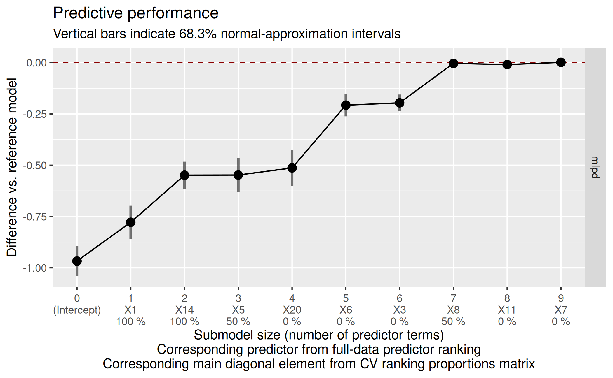
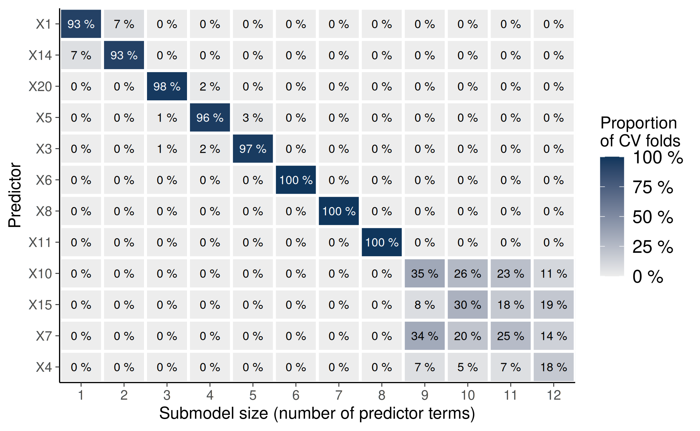
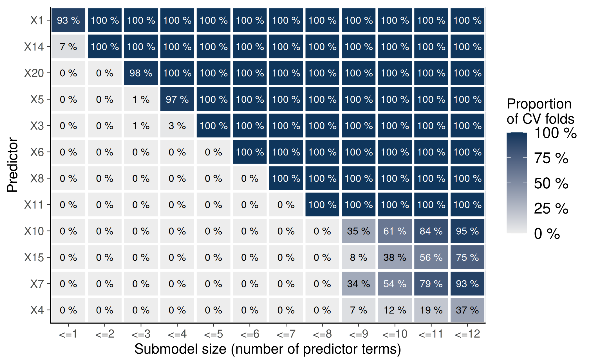
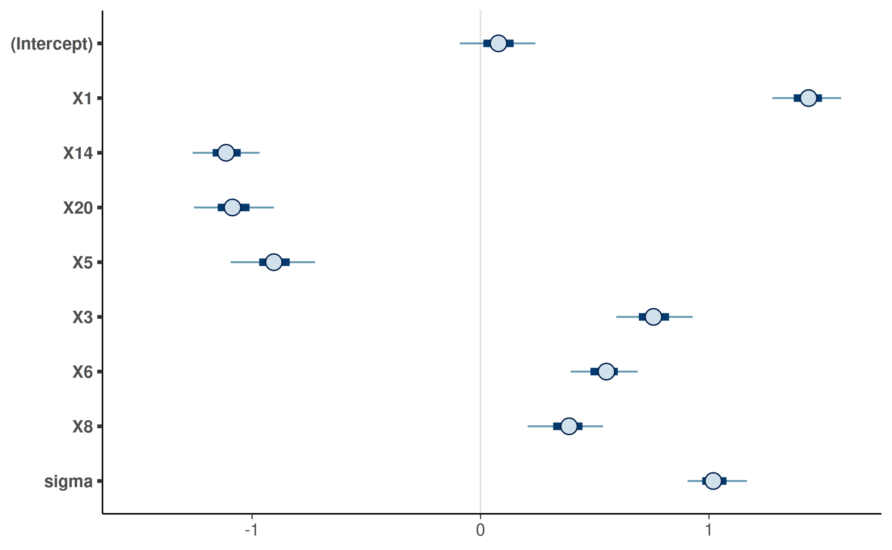
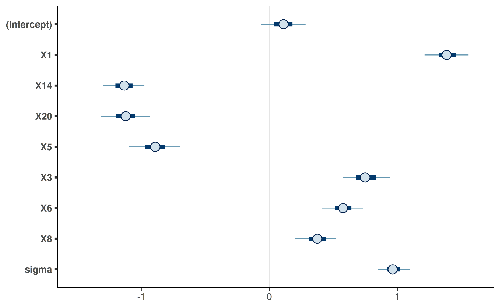
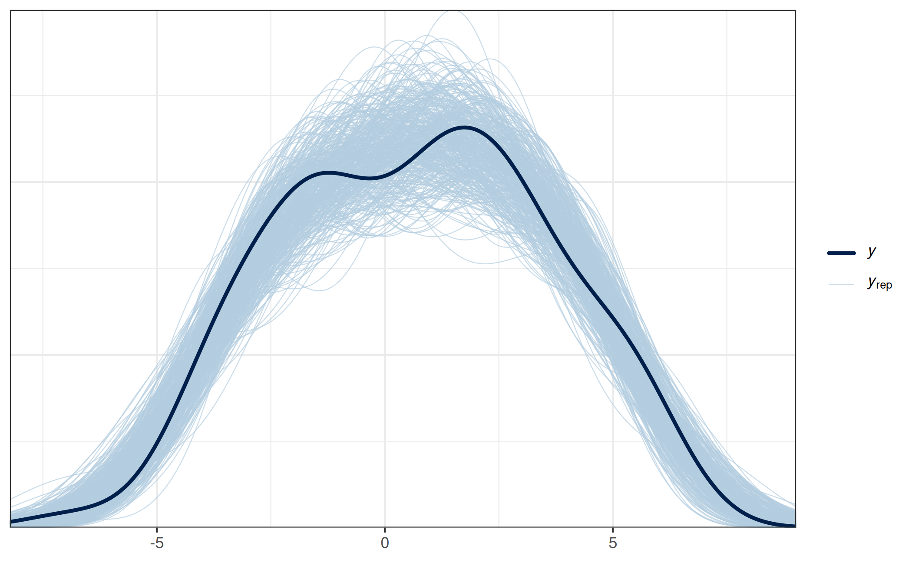

projpred: Projection predictive feature selection
2026-11-20
Source:vignettes/projpred.Rmd
projpred.RmdIntroduction
This vignette illustrates the main functionalities of the projpred package, which implements the projection predictive variable selection for various regression models (see section “Supported types of models” below for more details on supported model types). What is special about the projection predictive variable selection is that it not only performs a variable selection, but also allows for (approximately) valid post-selection inference.
The projection predictive variable selection is based on the ideas of Goutis and Robert (1998) and Dupuis and Robert (2003). The methods implemented in projpred are described in detail in Piironen et al. (2020), Catalina et al. (2022), Weber et al. (2025), and Catalina et al. (2021). A comparison to many other methods may also be found in Piironen and Vehtari (2017a). An introduction to the theory behind projpred, a workflow for practitioners, and further insights into the theory (and practice) of projection predictive inference are presented by McLatchie et al. (2025). For details on how to cite projpred, see the projpred citation info on CRAN1.
Data
For this vignette, we use projpred’s
df_gaussian data. It contains 100 observations of 20
continuous predictor variables X1, …, X20
(originally stored in a sub-matrix; we turn them into separate columns
below) and one continuous response variable y.
data("df_gaussian", package = "projpred")
dat_gauss <- data.frame(y = df_gaussian$y, df_gaussian$x)Reference model
First, we have to construct a reference model for the projection predictive variable selection. This model is considered as the best (“reference”) solution to the prediction task. The aim of the projection predictive variable selection is to find a subset of a set of candidate predictors which is as small as possible but achieves a predictive performance as close as possible to that of the reference model.
Usually (and this is also the case in this vignette), the reference
model will be an rstanarm or brms fit. To
our knowledge, rstanarm and brms are
currently the only packages for which a get_refmodel()
method (which establishes the compatibility with
projpred) exists. Creating a reference model object via
one of these methods get_refmodel.stanreg() or
brms::get_refmodel.brmsfit() (either implicitly by a call
to a top-level function such as project(),
varsel(), and cv_varsel(), as done below, or
explicitly by a call to get_refmodel()) leads to a
“typical” reference model object. In that case, all candidate models are
actual submodels of the reference model. In general, however,
this assumption is not necessary for a projection predictive variable
selection (see, e.g., Piironen et al. 2020).
This is why “custom” (i.e., non-“typical”) reference model objects allow
to avoid this assumption (although the candidate models of a “custom”
reference model object will still be actual submodels of the
full formula used by the search procedure—which does not
have to be the same as the reference model’s formula, if
the reference model possesses a formula at all). Such
“custom” reference model objects can be constructed via
init_refmodel() (or get_refmodel.default()),
as shown in section “Examples” of the ?init_refmodel
help.
Here, we use the rstanarm package to fit the
reference model. If you want to use the brms package,
simply replace the rstanarm fit (of class
stanreg) in all the code below by your
brms fit (of class brmsfit).
For our rstanarm reference model, we use the
Gaussian distribution as the family for our response. With
respect to the predictors, we only include the linear main effects of
all 20 predictor variables. The formula y ~ . uses all
other columns of the data as predictors. Compared to the more complex
types of reference models supported by projpred (see
section “Supported types of models” below), this
is a quite simple reference model which is sufficient, however, to
demonstrate the interplay of projpred’s functions.
We use rstanarm’s default priors in our reference model, except for the regression coefficients for which we use a regularized horseshoe prior (Piironen and Vehtari 2017c) with the hyperprior for its global shrinkage parameter following Piironen and Vehtari (2017b) and Piironen and Vehtari (2017c). In R code, these are the preparation steps for the regularized horseshoe prior:
[1] 20
# Prior guess for the number of relevant (i.e., non-zero) regression
# coefficients:
p0 <- 5
# Number of observations:
N <- nrow(dat_gauss)
# Hyperprior scale for tau, the global shrinkage parameter (note that for the
# Gaussian family, 'rstanarm' will automatically scale this by the residual
# standard deviation):
tau0 <- p0 / (D - p0) * 1 / sqrt(N)We now fit the reference model to the data. To make this vignette
build faster, we use only 2 MCMC chains and 1000 iterations per chain
(with half of them being discarded as warmup draws). In practice, 4
chains and 2000 iterations per chain are reasonable defaults.
Furthermore, we make use of rstan’s
parallelization, which means to run each chain on a separate CPU core2. If you
run the following code yourself, you can either rely on an automatic
mechanism to detect the number of CPU cores (like the
parallel::detectCores() function shown below) or adapt
ncores manually to your system.
# Set this manually if desired:
ncores <- parallel::detectCores(logical = FALSE)
### Only for technical reasons in this vignette (you can omit this when running
### the code yourself):
ncores <- min(ncores, 2L)
###
options(mc.cores = ncores)
set.seed(50780)
refm_fit <- stan_glm(
y ~ .,
family = gaussian(),
data = dat_gauss,
prior = hs(global_scale = tau0),
### Only for the sake of speed (not recommended in general):
chains = 2, iter = 1000,
### In general, use defaults or explicitly define
### chains = 4, iter = 4000,
###
refresh = 0
)Usually, we would now have to check the convergence diagnostics (see,
e.g., ?posterior::diagnostics and
?posterior::default_convergence_measures). However, due to
the technical reasons for which we reduced chains and
iter, we skip this step here.
Variable selection
Now, projpred comes into play.
From the reference model fit (called refm_fit here), we
create a reference model object (i.e., an object of class
refmodel) since this avoids redundant calculations in the
remainder of this vignette3:
refm_obj <- get_refmodel(refm_fit)In projpred, the projection predictive variable selection relies on a so-called search part and a so-called evaluation part. The search part determines the predictor ranking (also known as solution path), i.e., the best submodel for each submodel size (the size is given by the number of predictor terms). The evaluation part determines the predictive performance of the increasingly complex submodels along the predictor ranking.
There are two functions for running the combination of search and
evaluation: varsel() and cv_varsel(). In
contrast to varsel(), cv_varsel() performs a
cross-validation (CV). With cv_method = "LOO" (the
default), cv_varsel() runs a Pareto-smoothed importance
sampling leave-one-out CV (PSIS-LOO CV, see Vehtari et al. 2017, 2022). With
cv_method = "kfold", cv_varsel() runs a \(K\)-fold CV. The extent of the CV mainly
depends on cv_varsel()’s argument
validate_search: If validate_search = TRUE
(the default), the search part is run with the training data of each CV
fold separately and the evaluation part is run with the corresponding
test data of each CV fold. If validate_search = FALSE, the
search is excluded from the CV so that only a single full-data search is
run. Because of its more thorough protection against overfitting4,
cv_varsel() with validate_search = TRUE is
recommended over varsel() and cv_varsel() with
validate_search = FALSE. For large models, a preliminary
run of varsel() or cv_varsel() with
validate_search = FALSE can give a rough idea of the
performance of the submodels. It can also help to choose argument
nterms_max (the largest submodel size of the search) for
the run with validated search (see section “Speed”).
cv_varsel() run
Here, we run cv_varsel() with its defaults: PSIS-LOO CV
(cv_method = "LOO"), validated search
(validate_search = TRUE) and forward search
(method = "forward"). For a Gaussian reference model with
the identity link and without multilevel or additive terms, like this
one, projpred computes the forward search and the LOO
CV with validated search from cross-products of the model matrix. This
run takes only a few seconds.
The code below also shows how projpred’s CV can be
parallelized with the future package (we disable the
parallelization for the vignette build). The LOO folds are then split
among the parallel workers. For a model as small as this one, the
parallelization overhead can be larger than the runtime gain. We use the
workers of the future.mirai package because the first
parallel call was faster with them than with
future::multisession. For more details, see section
“Parallelization” in the package documentation (online)
or type ?`projpred-package`.
If PSIS-LOO CV is not reliable (for example, if many Pareto \(\hat{k}\) values are high), \(K\)-fold CV
(cv_method = "kfold") is an alternative. Then
run_cvfun() can run the \(K\) reference model refits once, so that
several cv_varsel() calls can use them (see argument
cvfits of cv_varsel()).
# For running projpred's CV in parallel (see cv_varsel()'s argument `parallel`):
# Note: Parallel processing is disabled during package building to avoid issues
use_parallel <- FALSE # Set to TRUE for actual parallel processing
if (use_parallel) {
future::plan(future.mirai::mirai_multisession, workers = ncores)
}
cvvs <- cv_varsel(
refm_obj,
parallel = use_parallel,
### In interactive use, we recommend not to deactivate the verbose mode:
verbose = 0
###
)
# Tear down the CV parallelization setup:
if (use_parallel) {
future::plan(future::sequential)
}Predictive performance plot from the cv_varsel()
run
We can now select a submodel size by looking at a predictive
performance plot. By default, the performance statistics are plotted on
their actual scale and the uncertainty bars match this scale, but
argument deltas of plot.vsel() offers two more
options:
- With
deltas = TRUE, the performance statistics are plotted on difference scale, i.e., as differences5 from the baseline model6 and the uncertainty bars match this scale, - With
deltas = "mixed", the performance statistics (i.e., their point estimates) are plotted on the actual scale, but the uncertainty bars visualize the difference-scale uncertainty.
Since the difference-scale uncertainty is usually more helpful than
the actual-scale uncertainty (at least with regard to the decision for a
final submodel size), we plot with deltas = TRUE here
(deltas = "mixed" would be another good choice). We also
set show_cv_proportions = TRUE (via its global option) for
illustrative purposes, which becomes clearer in section “Predictor ranking(s) from the cv_varsel()
run and identification of the selected submodel”. The search ran up
to submodel size 19 (here, the default of argument
nterms_max of cv_varsel()). To keep the labels
readable, the plot shows only the sizes up to 12 (argument
nterms_max of plot.vsel()):
ggplot2::theme_set(bayesplot::theme_default(base_family = "sans"))
options(projpred.plot_vsel_size_position = "primary_x_bottom")
options(projpred.plot_vsel_text_angle = 0)
options(projpred.plot_vsel_show_cv_proportions = TRUE)
plot(cvvs, stats = "mlpd", deltas = TRUE, nterms_max = 12)
Decision for final submodel size
Based on that predictive performance plot, we decide for a submodel size. Usually, the aim is to find the smallest submodel size where the predictive performance of the submodels levels off and is close enough to the reference model’s predictive performance (the dashed red horizontal line).
Sometimes, the plot may be ambiguous because after reaching the reference model’s performance, the submodels’ performance may keep increasing (and hence become even better than the reference model’s performance7). In that case, one has to find a suitable trade-off between predictive performance (accuracy) and model size (sparsity) in the context of subject-matter knowledge.
Here, we decide for a submodel size of 7 because it seems to provide the best trade-off between sparsity and accuracy (size 7 is the smallest size where the submodel MLPD is close enough to the reference model MLPD and from size 7 on, the submodel MLPD levels off). At sizes 7 to 10, the submodels predict slightly better than the reference model. The reference model also includes 12 predictors with little or no effect, and their posterior uncertainty adds predictive variance, which the projection onto the smaller submodels removes.
size_decided <- 7In section “Predictor ranking(s) from the
cv_varsel() run and identification of the selected
submodel”, the predictor ranking and the (CV) ranking proportions
that are shown in the plot (below the submodel sizes on the x-axis) are
explained in detail, together with how they support our decision for a
submodel size.
The suggest_size() function offered by
projpred may help in the decision for a submodel size,
but this is a rather heuristic method and needs to be interpreted with
caution (see ?suggest_size):
suggest_size(cvvs, stat = "mlpd")[1] 7In this case, that heuristic gives the same final submodel size
(7) as our manual decision.
Predictive performance table from the cv_varsel()
run
A tabular representation of the plot created by
plot.vsel() can be achieved via summary.vsel()
or performances(). In contrast to
performances(), the output of summary.vsel()
contains more information than just the predictive performance results,
which is also why there is a sophisticated print() method
for objects of class vselsummary (the output of
summary.vsel()). This method
print.vselsummary() is also called by the shortcut method
print.vsel() which can be applied to an object resulting
from varsel() or cv_varsel().
Specifically, to create the table matching the predictive performance
plot above as closely as possible (and to also adjust the minimum number
of printed significant digits), we may call summary.vsel()
and print.vselsummary() as follows:
smmry <- summary(cvvs,
stats = "mlpd",
type = c("mean", "lower", "upper"),
deltas = TRUE,
nterms_max = 12)
print(smmry, digits = 2)
Family: gaussian
Link function: identity
Formula: y ~ X1 + X2 + X3 + X4 + X5 + X6 + X7 + X8 + X9 + X10 + X11 +
X12 + X13 + X14 + X15 + X16 + X17 + X18 + X19 + X20
Observations: 100
Projection method: traditional
CV method: PSIS-LOO CV with search included (i.e., fold-wise searches)
Search method: forward
Maximum submodel size for the search: 12
Number of projected draws in the search: 20 (from clustered projection)
Number of projected draws in the performance evaluation: 400
Argument `refit_prj`: TRUE
Submodel performance evaluation summary with `deltas = TRUE` and `cumulate = FALSE`:
size ranking_fulldata cv_proportions_diag mlpd mlpd.lower mlpd.upper
0 (Intercept) NA -1.049 -1.1285 -0.969
1 X1 0.93 -0.920 -1.0069 -0.833
2 X14 0.93 -0.626 -0.7020 -0.549
3 X20 0.98 -0.534 -0.6026 -0.466
4 X5 0.96 -0.399 -0.4684 -0.330
5 X3 0.97 -0.188 -0.2485 -0.128
6 X6 1.00 -0.054 -0.0977 -0.010
7 X8 1.00 0.029 0.0043 0.053
8 X11 1.00 0.047 0.0352 0.059
9 X10 0.35 0.031 0.0200 0.041
10 X15 0.30 0.021 0.0114 0.032
11 X7 0.25 0.016 0.0072 0.024
12 X4 0.18 0.014 0.0078 0.020
Reference model performance evaluation summary with `deltas = TRUE`:
mlpd mlpd.lower mlpd.upper
0 0 0 The generic function performances() (with main method
performances.vselsummary() and the shortcut method
performances.vsel()) essentially extracts the predictive
performance results from the output of summary.vsel():
perf <- performances(smmry)
str(perf)List of 2
$ submodels :'data.frame': 13 obs. of 4 variables:
..$ size : num [1:13] 0 1 2 3 4 5 6 7 8 9 ...
..$ mlpd : num [1:13] -1.049 -0.92 -0.626 -0.534 -0.399 ...
..$ mlpd.lower: num [1:13] -1.129 -1.007 -0.702 -0.603 -0.468 ...
..$ mlpd.upper: num [1:13] -0.969 -0.833 -0.549 -0.466 -0.33 ...
$ reference_model: Named num [1:3] 0 0 0
..- attr(*, "names")= chr [1:3] "mlpd" "mlpd.lower" "mlpd.upper"
- attr(*, "class")= chr "performances"Predictor ranking(s) from the cv_varsel() run and
identification of the selected submodel
As indicated by its column name, the predictor ranking from column
ranking_fulldata of the summary.vsel() output
is based on the full-data search. This full-data predictor ranking is
also what is shown in the second line of the x-axis tick labels of the
predictive performance plot from section “Predictive performance plot from the
cv_varsel() run”.
In case of cv_varsel() with
validate_search = TRUE, there is not only the full-data
search, but also fold-wise searches, implying that there are also
fold-wise predictor rankings. All of these predictor rankings (the
full-data one and—if available—the fold-wise ones) can be retrieved via
ranking(). As in the plot above, we cut off the rankings at
12 predictor terms (argument nterms_max of
ranking()):
rk <- ranking(cvvs, nterms_max = 12)In addition to inspecting the full-data predictor ranking, it often
makes sense to investigate the ranking proportions derived from the
fold-wise predictor rankings (only available in case of
cv_varsel() with validate_search = TRUE, which
we have here) in order to get a sense for the variability in the ranking
of the predictors. For a given predictor \(x\) and a given submodel size \(j\), the ranking proportion is the
proportion of CV folds which have predictor \(x\) at position \(j\) of their predictor ranking. To compute
these ranking proportions, we use cv_proportions():
( pr_rk <- cv_proportions(rk) ) predictor
size X1 X14 X20 X5 X3 X6 X8 X11 X10 X15 X7 X4
1 0.93 0.07 0.00 0.00 0.00 0 0 0 0.00 0.00 0.00 0.00
2 0.07 0.93 0.00 0.00 0.00 0 0 0 0.00 0.00 0.00 0.00
3 0.00 0.00 0.98 0.01 0.01 0 0 0 0.00 0.00 0.00 0.00
4 0.00 0.00 0.02 0.96 0.02 0 0 0 0.00 0.00 0.00 0.00
5 0.00 0.00 0.00 0.03 0.97 0 0 0 0.00 0.00 0.00 0.00
6 0.00 0.00 0.00 0.00 0.00 1 0 0 0.00 0.00 0.00 0.00
7 0.00 0.00 0.00 0.00 0.00 0 1 0 0.00 0.00 0.00 0.00
8 0.00 0.00 0.00 0.00 0.00 0 0 1 0.00 0.00 0.00 0.00
9 0.00 0.00 0.00 0.00 0.00 0 0 0 0.35 0.08 0.34 0.07
10 0.00 0.00 0.00 0.00 0.00 0 0 0 0.26 0.30 0.20 0.05
11 0.00 0.00 0.00 0.00 0.00 0 0 0 0.23 0.18 0.25 0.07
12 0.00 0.00 0.00 0.00 0.00 0 0 0 0.11 0.19 0.14 0.18
attr(,"class")
[1] "cv_proportions"The main diagonal of this matrix is contained in column
cv_proportions_diag of the summary.vsel()
output and is also shown in the third line of the x-axis tick labels of
the predictive performance plot from section “Predictive performance plot from the
cv_varsel() run” (due to
show_cv_proportions = TRUE set via its global option).
Here, most LOO CV folds have X1 at position 1 and
X14 at position 2. At positions 3 to 8, most folds also
have the same predictor as the full-data predictor ranking. From
position 9 on, the proportions are smaller, so the ranking of the
remaining predictors varies between the folds. Since the column names of
the matrix returned by cv_proportions() follow the
full-data predictor ranking, we can infer that X1 and
X14 are also the most relevant predictor terms (in this
order) in the full-data predictor ranking. To see this more explicitly,
we can access element fulldata of the
ranking() output:
rk[["fulldata"]] [1] "X1" "X14" "X20" "X5" "X3" "X6" "X8" "X11" "X10" "X15" "X7" "X4" This is the same as column ranking_fulldata in the
summary.vsel() output above (apart from the intercept).
We cut off the predictor rankings at 12 predictor terms, which is
smaller than the number of predictor terms in the full model (20 here).
Therefore, the ranking proportions in the pr_rk matrix do
not need to sum to 100% (neither column-wise nor row-wise).
The transposed matrix of ranking proportions can be
visualized via plot.cv_proportions():
plot(pr_rk)
Apart from visualizing the variability in the ranking of the predictors, this plot will be helpful later.To retrieve the predictor terms of the final submodel (except for the intercept which is always included in the submodels), we combine the chosen submodel size of 7 with the full-data predictor ranking:
( predictors_final <- head(rk[["fulldata"]], size_decided) )[1] "X1" "X14" "X20" "X5" "X3" "X6" "X8" At this place, it is again helpful to take the ranking proportions into account, but now in a cumulated fashion:
plot(cv_proportions(rk, cumulate = TRUE))
This plot shows that all fold-wise searches and the full-data search agree on the set of the 7 most relevant predictors. (The full-data predictor ranking determines the order of the predictors on the y-axis.) At<=7 on the x-axis, all tiles above and
including the 7th main diagonal element are at 100%. The same
holds for the set of the 8 most relevant predictors
(<=8), but not for larger sets. For example, only some
of the folds have X10 among their first 9 predictors.
The cumulated ranking proportions can also guide the decision for a
submodel size. Here, they agree with our choice of size 7: all folds
select the same 7 (and 8) predictors. A size of 9 would add
X10, which only some of the folds have among their first 9
predictors.
In a real-world application, we might also be able to incorporate the full-data predictor ranking into our decision for a submodel size (usually, this requires to also take into account the variability of the predictor ranking, as reflected by the—possibly cumulated—ranking proportions). For example, the predictors might be associated with different measurement costs, so that we might want to select a costly predictor only if the submodel size at which it would be selected (according to the full-data predictor ranking, but taking into account that there might be variability in the ranking of the predictors) comes with a considerable increase in predictive performance.
Post-selection inference
The project() function returns an object of class
projection which forms the basis for convenient
post-selection inference. By the following project() call,
we project the reference model onto the final submodel once again8:
prj <- project(
refm_obj,
predictor_terms = predictors_final,
### In interactive use, we recommend not to deactivate the verbose mode:
verbose = 0
###
)Next, we create a matrix containing the projected posterior draws
stored in the depths of project()’s output:
prj_mat <- as.matrix(prj)This matrix is all we need for post-selection inference. It can be
used like any matrix of draws from MCMC procedures, except that it
doesn’t reflect a typical posterior distribution, but rather a projected
posterior distribution, i.e., the distribution arising from the
deterministic projection of the reference model’s posterior distribution
onto the parameter space of the final submodel9. Beware that in case
of clustered projection (i.e., a non-NULL argument
nclusters in the project() call), the
projected draws have different (i.e., nonconstant) weights, which needs
to be taken into account when performing post-selection (or, more
generally, post-projection) inference, see
as_draws_matrix.projection() (proj_linpred()
and proj_predict() offer similar functionality via
arguments return_draws_matrix and
nresample_clusters, respectively10).
Marginals of the projected posterior
The posterior package provides a general way to deal with posterior distributions, so it can also be applied to our projected posterior. For example, to calculate summary statistics for the marginals of the projected posterior:
prj_drws <- as_draws_matrix(prj_mat)
prj_smmry <- summarize_draws(
prj_drws,
"median", "mad", function(x) quantile(x, probs = c(0.025, 0.975))
)
# Coerce to a `data.frame` because some pkgdown versions don't print the
# tibble correctly:
prj_smmry <- as.data.frame(prj_smmry)
print(prj_smmry, digits = 1) variable median mad 2.5% 97.5%
1 (Intercept) 0.08 0.10 -0.1 0.3
2 X1 1.44 0.09 1.2 1.6
3 X14 -1.11 0.09 -1.3 -0.9
4 X20 -1.09 0.10 -1.3 -0.9
5 X5 -0.90 0.10 -1.1 -0.7
6 X3 0.76 0.10 0.6 1.0
7 X6 0.55 0.09 0.4 0.7
8 X8 0.39 0.10 0.2 0.6
9 sigma 1.02 0.08 0.9 1.2A visualization of the projected posterior can be achieved with the
bayesplot
package, for example using its mcmc_intervals()
function:
mcmc_intervals(prj_mat) +
ggplot2::coord_cartesian(xlim = c(-1.5, 1.6))
Note that we only visualize the 1-dimensional marginals of the projected posterior here. To gain a more complete picture, we would have to visualize at least some 2-dimensional marginals of the projected posterior (i.e., marginals for pairs of parameters).
For comparison, consider the marginal posteriors of the corresponding parameters in the reference model:
refm_mat <- as.matrix(refm_fit)
mcmc_intervals(refm_mat, pars = colnames(prj_mat)) +
ggplot2::coord_cartesian(xlim = c(-1.5, 1.6))
Here, the reference model’s marginal posteriors differ only slightly from the marginals of the projected posterior. This does not necessarily have to be the case.
Predictions
Predictions from the final submodel can be made by
proj_linpred() and proj_predict().
We start with proj_linpred(). For example, suppose we
have the following new observations:
( dat_gauss_new <- setNames(
as.data.frame(replicate(length(predictors_final), c(-1, 0, 1))),
predictors_final
) ) X1 X14 X20 X5 X3 X6 X8
1 -1 -1 -1 -1 -1 -1 -1
2 0 0 0 0 0 0 0
3 1 1 1 1 1 1 1Then proj_linpred() can calculate the linear
predictors11 for all new observations from
dat_gauss_new. Depending on argument
integrated, these linear predictors can be averaged across
the projected draws (within each new observation). For instance, the
following computes the expected values of the new observations’
predictive distributions (beware that the following code refers to the
Gaussian family with the identity link function; for other
families—which usually come in combination with a different link
function—one would typically have to use transform = TRUE
in order to achieve such expected values):
prj_linpred <- proj_linpred(prj, newdata = dat_gauss_new, integrated = TRUE)
cbind(dat_gauss_new, linpred = as.vector(prj_linpred[["pred"]])) X1 X14 X20 X5 X3 X6 X8 linpred
1 -1 -1 -1 -1 -1 -1 -1 0.05693269
2 0 0 0 0 0 0 0 0.07767737
3 1 1 1 1 1 1 1 0.09842204If dat_gauss_new also contained response values (i.e.,
y values in this example), then proj_linpred()
would also evaluate the log predictive density at these (conditional on
each of the projected parameter draws if integrated = FALSE
and integrated over the projected parameter draws—before taking the
logarithm—if integrated = TRUE).
With proj_predict(), we can obtain draws from predictive
distributions based on the final submodel. In contrast to
proj_linpred(<...>, integrated = FALSE), this
encompasses not only the uncertainty arising from parameter estimation,
but also the uncertainty arising from the observation (or “sampling”)
model for the response12. This is useful for what is usually
termed a posterior predictive check (PPC), but would have to be termed
something like a posterior-projection predictive check (PPPC) here:
prj_predict <- proj_predict(prj)
# Using the 'bayesplot' package:
ppc_dens_overlay(y = dat_gauss$y, yrep = prj_predict)
This PPPC shows that our final projection is able to generate predictions similar to the observed response values, which indicates that this model is reasonable, at least in this regard.
Supported types of models
In principle, the projection predictive variable selection requires only little information about the form of the reference model. Although many aspects of the reference model coincide with those from the submodels if a “typical” reference model object is used, this does not need to be the case if a “custom” reference model object is used (see section “Reference model” above for the definition of “typical” and “custom” reference model objects). This explains why in general, the following remarks refer to the submodels and not to the reference model.
In the following and throughout projpred’s documentation, the term “traditional projection” is used whenever the projection type is neither “augmented-data” nor “latent” (see below for a description of these).
Apart from the gaussian() response family used in this
vignette, projpred’s traditional projection also
supports the binomial()13 and the poisson()
family.
The families currently supported by projpred’s
augmented-data projection (Weber et al. 2025) are
binomial()14 15, brms::cumulative(),
rstanarm::stan_polr() fits, and
brms::categorical()16. See ?extend_family (which
is called by init_refmodel()) for an explanation how to
apply the augmented-data projection to “custom” reference model objects.
For “typical” reference model objects (i.e., those created by
get_refmodel.stanreg() or
brms::get_refmodel.brmsfit()), the augmented-data
projection is applied automatically if the family is supported by the
augmented-data projection and neither binomial() nor
brms::bernoulli(). For applying the augmented-data
projection to the binomial() (or
brms::bernoulli()) family, see ?extend_family
as well as ?augdat_link_binom and
?augdat_ilink_binom. Finally, we note that there are some
restrictions with respect to the augmented-data projection;
projpred will throw an informative error if a requested
feature is currently not supported for the augmented-data
projection.
The latent projection (Catalina et al. 2021) is a
quite general principle for extending projpred’s
traditional projection to more response families. The latent projection
is applied when setting argument latent of
extend_family() (which is called by
init_refmodel()) to TRUE. The families for
which full latent-projection functionality (in particular,
resp_oscale = TRUE, i.e., post-processing on the original
response scale) is currently available are binomial()17 18,
poisson(), brms::cumulative(), and
rstanarm::stan_polr() fits19. For all other
families, it is worth trying the latent projection (by setting
latent = TRUE); projpred will state if any
features are not available and how to make them available. More details
concerning the latent projection are given in the corresponding latent-projection
vignette. For example, section “Example:
Negative binomial distribution” of that vignette illustrates the use
of the latent projection for a negative binomial model, section “Example:
Weibull distribution with right-censored observations” for a Weibull
model with right-censored observations, and section “Example:
Log-normal distribution with right-censored observations” for a
log-normal model with right-censored observations. The latter two
situations are known as parametric survival (or time-to-event) analyses.
Note that there are some restrictions with respect to the latent
projection; projpred will throw an informative error if
a requested feature is currently not supported for the latent
projection.
On the side of the predictors, projpred not only supports linear main effects as shown in this vignette, but also interactions, multilevel20, and—as an experimental feature—additive21 terms.
Transferring this vignette to such more complex problems is straightforward (also because this vignette employs a “typical” reference model object): Basically, only the code for fitting the reference model via rstanarm or brms needs to be adapted. The projpred code stays almost the same. Only note that in case of multilevel or additive reference models, some projpred functions then have slightly different options for a few arguments. See the documentation for details.
For example, to apply projpred to the
VerbAgg dataset from the lme4
package, a corresponding multilevel reference model for the binary
response r2 could be created by the following code:
data("VerbAgg", package = "lme4")
refm_fit <- stan_glmer(
r2 ~ btype + situ + mode + (btype + situ + mode | id),
family = binomial(),
data = VerbAgg,
QR = TRUE, refresh = 0
)As an example for an additive (non-multilevel) reference model,
consider the lasrosas.corn dataset from the agridat
package. A corresponding reference model for the continuous response
yield could be created by the following code (note that
pp_check(refm_fit) gives a bad PPC in this case, so there’s
still room for improvement):
data("lasrosas.corn", package = "agridat")
# Convert `year` to a `factor` (this could also be solved by using
# `factor(year)` in the formula, but we avoid that here to put more emphasis on
# the demonstration of the smooth term):
lasrosas.corn$year <- as.factor(lasrosas.corn$year)
refm_fit <- stan_gamm4(
yield ~ year + topo + t2(nitro, bv),
family = gaussian(),
data = lasrosas.corn,
QR = TRUE, refresh = 0
)As an example for an additive multilevel reference model, consider
the gumpertz.pepper dataset from the
agridat package. A corresponding reference model for
the binary response disease could be created by the
following code:
data("gumpertz.pepper", package = "agridat")
refm_fit <- stan_gamm4(
disease ~ field + leaf + s(water),
random = ~ (1 | row) + (1 | quadrat),
family = binomial(),
data = gumpertz.pepper,
QR = TRUE, refresh = 0
)In case of multilevel models, projpred has two
global options that may be relevant for users:
projpred.mlvl_pred_new and
projpred.mlvl_proj_ref_new. These are explained in detail
in the general package documentation (available online
or by typing ?`projpred-package`).
Troubleshooting
Non-convergence of predictive performance
Sometimes, the predictor ranking makes sense, but for an increasing submodel size, the predictive performance of the submodels does not approach the reference model’s predictive performance so that the submodels exhibit a predictive performance that stays worse than the reference model’s. There are different reasons that can explain this behavior (the following list might not be exhaustive, though):
- The reference model’s posterior may be so wide that the default
ndraws_predcould be too small. Usually, this comes in combination with a difference in predictive performance which is comparatively small. Increasingndraws_predshould help, but it also increases the computational cost. Refitting the reference model and thereby ensuring a narrower posterior (usually by employing a stronger sparsifying prior) should have a similar effect. - For non-Gaussian models, the discrepancy may be due to the fact that the penalized iteratively reweighted least squares (PIRLS) algorithm might have convergence issues (Catalina et al. 2021). In this case, the latent-space approach by Catalina et al. (2021) might help, see also the latent-projection vignette.
Overfitting
If varsel() is used, the lack of a CV in
varsel() may lead to overconfident and overfitted results.
We recommend cv_varsel() instead of varsel()
and cv_varsel() should be used for final results anyway.
Similarly, cv_varsel() with
validate_search = FALSE is more prone to overfitting than
cv_varsel() with validate_search = TRUE.
Issues with multilevel models
In multilevel models, the projected group-level standard deviations
can be near zero for the binomial() and
brms::bernoulli() families (traditional and augmented-data
projection). The same applies to the augmented-data projection of the
brms::cumulative() and brms::categorical()
families and of rstanarm::stan_polr() fits. In that case,
the search can underestimate the relevance of the group-level terms, see
#353.
projpred estimates these standard deviations by
(approximate) maximum marginal likelihood, which assumes binomial or
multinomial noise around the fitted values. The projection fits the
submodels to the reference model’s predictions, which have no noise, so
the data have less noise than the model assumes. The group-level
standard deviations are likely to be near zero if the groups have few
observations or the observations have few trials. The augmented-data
projection has one trial per observation. The latent projection might
help because its Gaussian submodels estimate the residual standard
deviation (see the latent-projection
vignette). The latent projection is not available for the
brms::categorical() family.
Speed
For Gaussian models with the identity link and without multilevel or
additive terms, and for the latent projection without such terms,
projpred computes the forward search and the LOO CV
with validated search from cross-products of the model matrix. The
defaults of cv_varsel() are usually fast for these models.
For other models, each projection is an iterative fit, and
cv_varsel() with the defaults can take much longer. For
binomial and Poisson models, the latent projection is an alternative
that uses the same fast computations (see the latent-projection
vignette).
There are many other ways to speed up projpred, but in general, such speed-ups lead to results that are less accurate and hence should only be considered as giving preliminary results. Some speed-up possibilities are:
Using
cv_varsel()withvalidate_search = FALSEinstead ofvalidate_search = TRUE. In case ofcv_method = "LOO"22,cv_varsel()withvalidate_search = FALSEhas comparable runtime tovarsel(), but accounts for some overfitting, namely that induced byvarsel()’s in-sample predictions during the predictive performance evaluation. However, as explained in section “Variable selection” (see also section “Overfitting”),cv_varsel()withvalidate_search = FALSEis more prone to overfitting thancv_varsel()withvalidate_search = TRUE. For the models with the fast computations above,validate_search = TRUEis usually fast enough.Using
cv_varsel()with subsampled PSIS-LOO CV (Magnusson et al. 2020), see argumentnlooofcv_varsel().Using
cv_varsel()with \(K\)-fold CV instead of PSIS-LOO CV. Whether this provides a speed improvement mainly depends on the number of observations, whether PSIS-LOO CV could be subsampled (and—if yes—how small argumentnlooofcv_varsel()could be set while still obtaining reliable results), and the complexity of the reference model. Note that PSIS-LOO CV is often more accurate than \(K\)-fold CV if argumentKis (much) smaller than argumentnlooofcv_varsel().Using a “custom” reference model object with a dimension reduction technique for the predictor data (e.g., by computing principal components from the original predictors, using these principal components as predictors when fitting the reference model, and then performing the variable selection in terms of the original predictor terms). Examples are given in Piironen et al. (2020) and Pavone et al. (2022). A short example for a custom reference model object is also given in section “Examples” of the
?init_refmodelhelp. This approach makes sense if there is a large number of predictor variables, in which case this aims at improving the runtime required for fitting the reference model and hence improving the runtime of \(K\)-fold CV.Using
varsel()with its argumentd_testfor evaluating predictive performance on a hold-out dataset instead of doing this withcv_varsel()’s CV approach. Typically, the hold-out approach requires a large amount of data.Reducing
nterms_maxinvarsel()orcv_varsel(). The resulting predictive performance plot(s) should be inspected to ensure that the search is not terminated too early (i.e., before the submodel performance levels off), which would indicate thatnterms_maxhas been reduced too much.Reducing argument
nclusters(ofvarsel()orcv_varsel()) below20and/or settingnclusters_predto some non-NULL(and smaller than400, the default forndraws_pred) value. If settingnclusters_predas low asnclusters(and using forward search),refit_prjcan instead be set toFALSE, see below.Using L1 search (see argument
methodofvarsel()orcv_varsel()) instead of forward search. Note that L1 search impliesnclusters = 1and is not always supported. In general, forward search is more accurate than L1 search and hence more desirable (see section “Details” in?varselor?cv_varselfor a more detailed comparison of the two).Setting argument
refit_prj(ofvarsel()orcv_varsel()) toFALSE, which basically means to setndraws_pred = ndrawsandnclusters_pred = nclusters, but in a more efficient (i.e., faster) way. In case of L1 search, this means that the L1-penalized projections of the regression coefficients are used for the predictive performance evaluation, which is usually undesired (Piironen et al. 2020, sec. 4). In case of forward search, this issue does not exist.Parallelizing the CV folds of
cv_varsel()with the future package (see the example above and argumentparallelofcv_varsel()). The parallel workers are set up withfuture::plan(), for examplefuture::plan(future.mirai::mirai_multisession, workers = 4)(recommended) orfuture::plan(future::multisession, workers = 4). When usingproject(), parallelizing the projection might also help (see the general package documentation available online or by typing?`projpred-package`).Using
varsel.vsel()orcv_varsel.vsel()to re-use previous search results for new performance evaluation(s). This is helpful if the performance evaluation part is run multiple times based on the same search results (e.g., when only argumentsndraws_predornclusters_predofvarsel()orcv_varsel()are changed). For example,cv_varsel(cvvs, ndraws_pred = 200)would re-use the searches of thecvvsobject from above and run only a new performance evaluation. Similarly, acv_varsel()call withrefit_prj = FALSEhas almost only the computational cost of the search, and subsequentcv_varsel.vsel()calls have only the computational cost of the performance evaluation. Note that the fold-wise searches of acv_varsel()call withrefit_prj = FALSEdo not use the random observation weights (see argumentloo_perturb_alphaofcv_varsel()).Using
run_cvfun()in case of repeated \(K\)-fold CV with the same \(K\) reference model refits. The output ofrun_cvfun()is typically used as input for argumentcvfitsofcv_varsel.refmodel()(so in order to have a speed improvement, the output ofrun_cvfun()needs to be assigned to an object which is then re-used in multiplecv_varsel()calls).